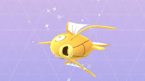

LOS POKEMON SHINYS
Los Pokémon shiny no son más que una versión alternativa de otro color de la especie normal de ese mismo Pokémon. Dependiendo de la versión en la que estemos, tendrán diferentes cualidades.
Primera Generación
Verde, Rojo, Azul y Amarillo
esta primera generación no había Pokémon shiny. No se habían ideado todavía, dada la incapacidad de las primeras Game Boy para reproducir colores.
Al funcionar con el mismo sistema de Valores Individuales que la Segunda Generación, en realidad hay Pokémon shiny según sus genes, pero no se les puede distinguir más que intercambiándolos a un juego de Segunda Generación. Por ello al pasar un Pokémon shiny de un juego de Segunda Generación a un juego de Primera Generación no dejará de ser shiny en ningún caso
Segunda Generación
Oro, Plata, Cristal, Stadium y Stadium 2
En estas ediciones ya se pueden conseguir los primeros Pkmn shiny.
Estos Pokémon presentan, además de su color peculiar, unos Valores Individuales (o genes) determinados, siendo 10 en Defensa, Especial y Velocidad, y de Ataque, 2, 3, 6, 7, 10, 11, 14 ó 15. Así quedan reducidas las posibilidades de que aparezca un Pkmn shiny a 1 entre 8192.
Aprovechando la cría, por la cual la cría hereda parte de los genes de los padres, se puede aumentar el ratio si uno de los padres es, a su vez, un Pokémon shiny. Esto es así porque el gen de Defensa, y el 50% del gen de Especial se heredan directamente del padre o de la madre (según género de la cría), quedando asi a 1 de cada 128 la probabilidad de que la cría sea shiny. Sin embargo, debido a este sistema, dos Pokémon shiny nunca podrán criar entre sí.
Si, además, uno de los padres es un Ditto shiny (mirad el truco), descartamos la variable del género, porque los genes que herede la cría siempre serán los del Ditto. Quedá así pues a 1 de cada 64 crías.
Tercera Generación
Rubí, Zafiro, Esmeralda, Rojo Fuego, Verde Hoja, Colosseum y XD: Tempestad Oscura
En esta generación sigue habiendo Pokémon shiny, solo que ya han perdido sus peculiaridades en cuanto a Valores Individuales, siendo las técnicas de cría inútiles.
